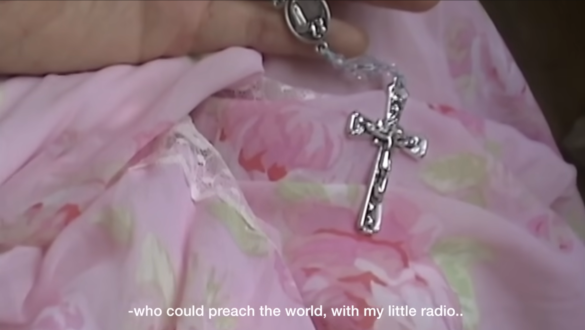
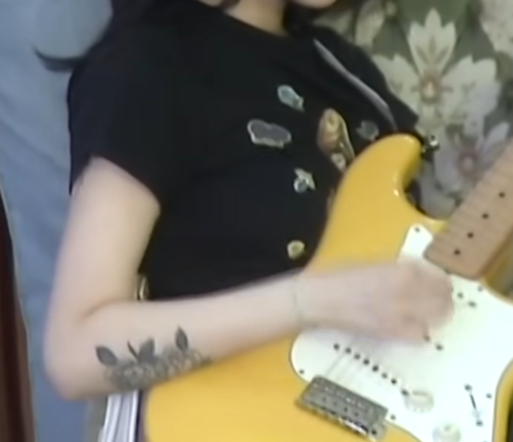

Time to fight back in my way
|
|---|
Radio My mama told me to go to church every Sunday / She believes in god but I'm livin' in hell / My only friend I barely hear from / Told me I could be the one / Who could save the earth With our only radio / If I have the answer I wouldn't say it / I would let them learn by themselves / If I have the solution I wouldn't say it / I would let them learn by themselves // My daddy left me his old stuff for my future / His love was crystal clear / But didn't last so long / The only heaven I believed in / Told me I could be the one / Who could preach the world / With my little radio // If I have the answer I wouldn't say it / I would let them learn by themselves / If I have the solution I wouldn't say it / I would let them learn by themselves / I have to get out of here / And raise my voice for myself / I have to get out of here / And raise my voice for myself / With my only radio // If I have the answer I wouldn't say it / I would let them learn by themselves / If I have the solution I wouldn't say it / I would let them learn by themselves |
 |
|---|
|  | Crap
Floating on water / See how fast we get drawn in and sink / The more you try to get it right / They'd never ever give you the answers // Don't think it's that much difficult / When they're all wreckers you could be a creator / It's okay to be caught when you lie sometimes / But you shouldn't lie again when I'm in your eyes / My mom told me you'll betray somehow / I don't believe in mom, I don't believe in you / You taught me a few disappointments / I taught you a few more ways to love / To love // You taught me many kinds of flavor / I taught you a few more ways of buying my heart / Don't feel so obligated to someone / Don't let them tell you what to do / You've become a man, / Sending a letter and flowers / You've become a man, / Who can express your feelings / You've become a man, not a mama's boy / You've become a man, to fuck me down / You've become a man, / Sending a letter and flowers / You've become a man, // Who can express your feelings / You've become a man, not a mama's boy / You've become a man, to fuck me down / I taught you a few more ways to love / You taught me many kinds of flavor / I taught you a few more ways of buying my heart / Don't feel so obligated to someone / Don't let them tell you what to do / Don't feel so obligated to someone / Don't let them tell you what to do |
|---|